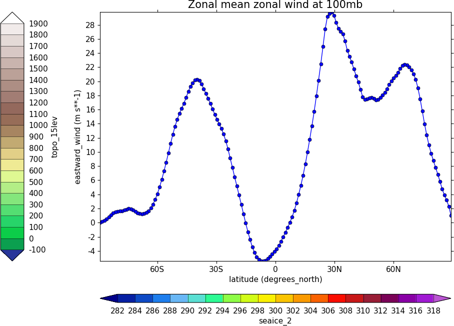

cf-plot user guide¶
Contents
Introduction¶
cf-plot is a set of Python functions for making common contour, vector and line plots that climate researchers use. cf-plot generally uses cf-python to present the data and CF attributes for plotting. It can also use numpy arrays of data as the input fields making for flexible plotting of data. cf-plot uses the Python numpy, matplotlib and scipy libraries.
At the core of cf-plot are a set of functions for making and controlling plots.
This user guide is a set of examples of plots that climate scientists generally make. Further details and fine tuning options are available by looking at the individual function documentation above.
Where cf-plot is installed and how to install it¶
cf-python and cf-plot are pre-installed on the following platforms.
For other platforms follow the cf-plot installation instructions
Contour plots¶
The following examples use cf-python to present the data to cf-plot. The syntax is quite simple and can be learned as the examples progress. A fuller discussion of using cf-python to manipulate data is available in appendixA. If you have numpy arrays that you wish to plot then look in appendixB for a couple of examples of how to do this.
The data to make a contour plot can be read in and passed to cf-plot using cf-python as per the following example.
Cylindrical projection¶
import cf
import cfplot as cfp
f=cf.read('cfplot_data/tas_A1.nc')[0]
cfp.con(f.subspace(time=15))

Note that for a contour plot two dimensional data is required.
f.subspace(time=15)
<CF Field: air_temperature(time(1), latitude(73), longitude(96)) K>
Dimensions that have one element, such as time in this instance, are ignored.
The cfp.mapset routine is used to change the map area and projection. cfp.mapset(lonmin=-15, lonmax=3, latmin=48, latmax=60) sets the map to a view over the British Isles. The cfp.mapset command is persistent in that any further map plots will use the same map projection and limits without having to specify the same map again. The levels are taken from the whole field and in this example we specify the levels explicitly with the cfp.levs command.
import cf
import cfplot as cfp
f=cf.read('cfplot_data/tas_A1.nc')[0]
cfp.mapset(lonmin=-15, lonmax=3, latmin=48, latmax=60)
cfp.levs(min=265, max=285, step=1)
cfp.con(f.subspace(time=15))

The default settings are for colour fill with contour lines over the top. These can be changed with the fill=False and lines=False flags to cfp.con.
To reset the mapping to the default cylindrical projection -180 to 180 in longitude and -90 to 90 in latitude use cfp.mapset(). Likewise to reset the contour levels use cfp.levs().
Blockfill plots¶
Blockfill plots in the cylindrical projection are made using the blockfill=True flag to the cfp.con routine.
import cf
import cfplot as cfp
f=cf.read('cfplot_data/tas_A1.nc')[0]
cfp.con(f.subspace(time=15), blockfill=True, lines=False)

Polar stereographic plots¶
Polar Stereographic plots are set using proj='npstere' or proj='spstere' in the call to cfp.mapset.
import cf
import cfplot as cfp
f=cf.read('cfplot_data/ggap.nc')[1]
cfp.mapset(proj='npstere')
cfp.con(f.subspace(pressure=500))

The mapset bounding_lat and lon_0 parameters are used to set the latitude limit of the plot and the orientation of the plot. Generally for the southern hemisphere the Greenwich Meridian (zero degrees longitude) is plotted at the top of the plot and is set with lon_0=0.
import cf
import cfplot as cfp
f=cf.read('cfplot_data/ggap.nc')[1]
cfp.mapset(proj='spstere', boundinglat=-30, lon_0=0)
cfp.con(f.subspace(pressure=500))

Latitude - Pressure Plots¶
The latitude-pressure plot below is made by using the cf subspace method to select the temperature at longitude=0 degrees. Again this data has two dimensions with multiple values in.
f.subspace(longitude=0)
<CF Field: air_temperature(time(1), pressure(23), latitude(160), longitude(1)) K>
import cf
import cfplot as cfp
f=cf.read('cfplot_data/ggap.nc')[2]
cfp.con(f.subspace(longitude=0))
{kind=link}
A mean of the data along the longitude (zonal mean) is made using the cf.collapse method.
import cf
import cfplot as cfp
f=cf.read('cfplot_data/ggap.nc')[1]
cfp.con(f.collapse('mean','longitude'))

To make a log pressure on the y axis use the ylog=True flag to the con routine.
import cf
import cfplot as cfp
f=cf.read('cfplot_data/ggap.nc')[1]
cfp.con(f.collapse('mean','longitude'), ylog=True)
{kind=link}
Hovmuller plots¶
A Hovmuller plot is one of longitude or latitude versus time as in the following examples.
import cf
import cfplot as cfp
f=cf.read('cfplot_data/tas_A1.nc')[0]
cfp.cscale('plasma')
cfp.con(f.subspace(longitude=0), lines=False)

import cf
import cfplot as cfp
f=cf.read('cfplot_data/tas_A1.nc')[0]
cfp.gset(-30, 30, '1960-1-1', '1980-1-1')
cfp.levs(min=280, max=305, step=1)
cfp.cscale('plasma')
cfp.con(f.subspace(longitude=0), lines=False)
{kind=link}
Vector and stream Plots¶
Vector plots are made using the cfp.vect routine. The u and v data must have two dimensions with matching multiple values in as below.
import cf
import cfplot as cfp
f=cf.read('cfplot_data/ggap.nc')
u=f[1].subspace(pressure=500)
v=f[2].subspace(pressure=500)
cfp.vect(u=u, v=v, key_length=10, scale=100, stride=5)

The key_length parameter sets the length of the reference key. The scale parameter sets the viewable length of the vector with scale=50 producing vectors that look twice as long as scale=100. There are often too many vectors on the plot giving a mostly black set of lines. The stride=5 option helps with this and will plot only every 5th vector location in x and y. There is also an alternative npts parameter that can be user to interpolate the data to this number of points in x and y.
In this example vectors are overlaid on a contour plot. Usually a plot is displayed immediately after making a cfp.con or cfp.vect command. As we want a vector plot on top of a contour plot we need to open a graphics file file cfp.gopen() make our contour and vector plots with cfp.con and cfp.vect and then close the graphics file with cfp.gclose().
import cf
import cfplot as cfp
f=cf.read('cfplot_data/ggap.nc')
u=f[1].subspace(pressure=500)
v=f[2].subspace(pressure=500)
t=f[0].subspace(pressure=500)
cfp.gopen()
cfp.mapset(lonmin=10, lonmax=120, latmin=-30, latmax=30)
cfp.levs(min=254, max=270, step=1)
cfp.con(t)
cfp.vect(u=u, v=v, key_length=10, scale=50, stride=2)
cfp.gclose()
{kind=link}
Here we make a zonal mean vector plot with different vector keys and scaling factors for the X and Y directions.
import cf
import cfplot as cfp
c=cf.read('cfplot_data/vaAMIPlcd_DJF.nc')
c=c.subspace(Y=cf.wi(-60,60))
c=c.subspace(X=cf.wi(80,160))
c=c.collapse('T: mean X: mean')
g=cf.read('cfplot_data/wapAMIPlcd_DJF.nc')
g=g.subspace(Y=cf.wi(-60,60))
g=g.subspace(X=cf.wi(80,160))
g=g.collapse('T: mean X: mean')
cfp.vect(u=c, v=-g, key_length=[4, 0.2], scale=[20.0, 0.2],
stride=[2,1], width=0.02, headwidth=6, headlength=6,
headaxislength=5, pivot='middle', title='DJF',
key_location=[0.95, -0.05])
{kind=link}
A streamplot is used to show fluid flow and 2D field gradients. In this first example the data goes from 0 to 358.875 in longitude. The cartopy / matplotlib interface seems to need the data to be inside the data window in longitude so we anchor the data in cf-python using the anchor method to start at -180 in longitude. If we didn't do this any longitudes less than zero would have no streams drawn.
import cf
import cfplot as cfp
import numpy as np
f=cf.read('cfplot_data/ggap.nc')
u = f[1].subspace(pressure=500)
v = f[2].subspace(pressure=500)
u = u.anchor('X', -180)
v = v.anchor('X', -180)
cfp.stream(u=u, v=v, density=2)
{kind=link}
In the second streamplot example a colorbar showing the intensity of the wind is drawn.
magnitude = (u ** 2 + v ** 2) ** 0.5
mag = np.squeeze(magnitude.array)
cfp.levs(0, 60, 5, extend='max')
cfp.cscale('viridis', ncols=13)
cfp.gopen()
cfp.stream(u=u, v=v, density=2, color=mag)
cfp.cbar(levs=cfp.plotvars.levels, position=[0.12, 0.12, 0.8, 0.02], title='Wind magnitude')
cfp.gclose()

Multiple plots on a page and plot positioning¶
To make multiple plots on the page open a graphic file with cfp.gopen and pass the rows and columns parameters. Make each plot in turn first selecting the position with cfp.gpos(). The first position is the top left plot and increases by one for one plot to the right until the final plot is made in the bottom right. When all the plots have been made close the plot with cfp.gclose(). A combined colour bar is also made as all the plots have the same contour levels and colour scale helping to reduce the plot complexity.
import cf
import cfplot as cfp
f=cf.read('cfplot_data/ggap.nc')[1]
cfp.gopen(rows=2, columns=2, bottom=0.2)
cfp.gpos(1)
cfp.con(f.subspace(pressure=500), lines=False, colorbar=None)
cfp.gpos(2)
cfp.mapset(proj='moll')
cfp.con(f.subspace(pressure=500), lines=False, colorbar=None)
cfp.gpos(3)
cfp.mapset(proj='npstere', boundinglat=30, lon_0=180)
cfp.con(f.subspace(pressure=500), lines=False, colorbar=None)
cfp.gpos(4)
cfp.mapset(proj='spstere', boundinglat=-30, lon_0=0)
cfp.con(f.subspace(pressure=500), lines=False, colorbar_position=[0.1, 0.1, 0.8, 0.02],
colorbar_orientation='horizontal')
cfp.gclose()

Plot spacing options are located in cfp.gopen
|and color bar spacings in cfp.cbar. | | orientation - orientation 'horizontal' or 'vertical' | position - user specified colorbar position in normalised | plot coordinates [left, bottom, width, height] | shrink - default=1.0 - scale colorbar along length | fraction - default = 0.21 - space for the colorbar in | normalised plot coordinates | thick - set height of colorbar - default = 0.015, | in normalised plot coordinates | anchor - default=0.3 - anchor point of colorbar within the fraction space. | 0.0 = close to plot, 1.0 = further away | |
When making map plots the default setting is for one degree of longitude to be the same size as one degree of longitude on the plot. This will make some plots smaller than the area allocated to them as the plot size will be changed to fit within the plot area. The aspect option to cfp.mapset can be used to change the aspect ratio if desired.
User specified plot limits are set by first specifying the user_position=True parameter to cfp.gopen and then the plot position to the gpos routines. The xmin, xmax, ymin, ymax paramenters for the plot display area are in plot extent normalised coordinates. These are 0.0 for bottom or left and 1.0 for top or right of the plot area.
Cylidrical projection plots have an additional rider of having a degree in longitude and latitude being the same size so plots of this type might not fill the plot area specified as expected.

import cf
import cfplot as cfp
f=cf.read('cfplot_data/ggap.nc')[1]
cfp.gopen(user_position=True)
cfp.gpos(xmin=0.1, xmax=0.5, ymin=0.55, ymax=0.95)
cfp.con(f.subspace(Z=500), lines=False, title='500mb')
cfp.gpos(xmin=0.55, xmax=0.95, ymin=0.55, ymax=0.95)
cfp.con(f.subspace(Z=100), lines=False, title='100mb')
cfp.gpos(xmin=0.3, xmax=0.7, ymin=0.1, ymax=0.5)
cfp.con(f.subspace(Z=10), lines=False, title='10mb')
cfp.gclose()
The indication that the plot position on the page is to be set manually is made with the user_position=True parameter to cfp.gopen. The required plot position is set in cfp.gpos with the xmin, xmax, ymin, ymax parameters. Two calls to the cfp.cbar routine then place colour bars on the plot with different colour scales and contour levels.
{kind=link}
import cf
import cfplot as cfp
import numpy as np
f=cf.read('cfplot_data/ggap.nc')[1]
g=f.collapse('X: mean')
cfp.gopen(user_position=True)
cfp.gpos(xmin=0.2, ymin=0.2, xmax=0.8, ymax=0.8)
cfp.lineplot(g.subspace(pressure=100), marker='o', color='blue',
title='Zonal mean zonal wind at 100mb')
cfp.cscale('seaice_2', ncols=20)
levs=np.arange(282, 320,2)
cfp.cbar(levs=levs, position=[0.2, 0.1, 0.6, 0.02], title='seaice_2')
cfp.cscale('topo_15lev', ncols=22)
levs=np.arange(-100, 2000, 100)
cfp.cbar(levs=levs, position=[0.03, 0.2, 0.04, 0.6], orientation='vertical', title='topo_15lev')
cfp.gclose()
Trajectories¶
Data stored in contiguous ragged array format, such as from Kevin Hodges's TRACK program, can be plotted using cf-plot using cfp.traj.

import cf
import cfplot as cfp
f=cf.read('cfplot_data/ff_trs_pos.nc')[0]
cfp.traj(f)
Stipple plots¶
A stipple plot is usually used to show areas of significance such as 95% or greater confidence. These plots use the overlay technique as used in the previous contour/vector plot. In these plots we show a coutour plot and a stipple plot between varous contour levels to show that the stippling works correctly. For different significance levels such as confidences of 95% and 99% chosing a different sized or colour marker is a common plot technique.
import cf
import cfplot as cfp
f=cf.read('cfplot_data/tas_A1.nc')[0]
g=f.subspace(time=15)
cfp.gopen()
cfp.cscale('magma')
cfp.con(g)
cfp.stipple(f=g, min=220, max=260, size=100, color='#00ff00')
cfp.stipple(f=g, min=300, max=330, size=50, color='#0000ff', marker='s')
cfp.gclose()
{kind=link}
import cf
import cfplot as cfp
f=cf.read('cfplot_data/tas_A1.nc')[0]
g=f.subspace(time=15)
cfp.gopen()
cfp.mapset(proj='npstere')
cfp.cscale('magma')
cfp.con(g)
cfp.stipple(f=g, min=265, max=295, size=100, color='#00ff00')
cfp.gclose()

Graph plots¶
To make a graph plot use the cfp.lineplot function as below on a single line of data in a field.
import cf
import cfplot as cfp
f=cf.read('cfplot_data/ggap.nc')[1]
g=f.collapse('X: mean')
cfp.lineplot(g.subspace(pressure=100), marker='o', color='blue',
title='Zonal mean zonal wind at 100mb')

To make a multiple line plot use the gopen, gclose commands to enclose the plotting commands as in the example below.
import cf
import cfplot as cfp
f=cf.read('cfplot_data/ggap.nc')[1]
g=f.collapse('X: mean')
xticks=[-90,-75,-60,-45,-30,-15,0,15,30,45,60,75,90]
xticklabels=['90S','75S','60S','45S','30S','15S','0','15N',
'30N','45N','60N','75N','90N']
xpts=[-30, 30, 30, -30, -30]
ypts=[-8, -8, 5, 5, -8]
cfp.gset(xmin=-90, xmax=90, ymin=-10, ymax=50)
cfp.gopen()
cfp.lineplot(g.subspace(pressure=100), marker='o', color='blue',
title='Zonal mean zonal wind', label='100mb')
cfp.lineplot(g.subspace(pressure=200), marker='D', color='red',
label='200mb', xticks=xticks, xticklabels=xticklabels,
legend_location='upper right')
cfp.plotvars.plot.plot(xpts,ypts, linewidth=3.0, color='green')
cfp.plotvars.plot.text(35, -2, 'Region of interest', horizontalalignment='left')
cfp.gclose()

Setting Contour Levels¶
cf-plot generally does a reasonable job of setting appropriate contour levels. In the cases where it doesn't do this or you need a consistent set of levels between plots for comparison purposes use the levs routine. The cfp.levs command manually sets the contour levels.
Use the cfp.levs command when a predefined set of levels is required. The min, max and step parameters are all needed to define a set of levels. These can take integer or floating point numbers. If colour filled contours are plotted then the default is to extend the minimum and maximum contours coloured for out of range values - extend='both'. Use the manual option to define a set of uneven contours i.e.
cfp.levs(manual=[-10, -5, -4, -3, -2, -1, 1, 2, 3, 4, 5, 10])
Once a user call is made to levs the levels are persistent. i.e. the next plot will use the same set of levels. Use cfp.levs() to reset to undefined levels i.e. let cf-plot generate the levels again. Once the cfp.levs command is used you'll need to think about the associated colour scale.
Colour scales¶
There are around 140 colour scales included with cf-plot. Colour scales are set with the cscale command. There are two default colour scales that suit differing types of data.
A continuous scale cfp.scale('viridis') that goes from blue to green and then yellow and suits data that has no zero in it. For example air temperature in Kelvin or geopotential height - see example 1 in the gallery plots.
A diverging scale cfp.cscale('scale1') that goes from blue to red and suits data with a zero in it. For example temperature in Celsius or zonal wind - see example 4 in the gallery plots.
cfp.levs(min=-80, max=80, step=10)
cfp.cscale('scale1')
{kind=link}
If no call has been made to adjust the colour scale then continuous and diverging colour scales are self adjusting to fit the number of levels automatically generated by cf-plot or specified by the user with the cfp.levs command. This behaviour is also followed for a simple call to cfp.cscale specifying a different colour scale - for example cfp.cscale('radar') to select the radar colour scheme.
If a call to cfp.cscale specifies additional parameters to the colour scale, then the automatic colour adjustment is turned off giving the user fine tuning of colours as below.
To change the number of colours in a scale use the ncols parameters.
cfp.cscale('scale1', ncols=12)
cfp.levs(min=-5, max=5, step=1)

To change the number of colours above and below the mid-point of the scale use the above and below parameters. This is useful for fields where you have differing extents of data above and below the zero line.
cfp.cscale('scale1', below=4, above=7)
cfp.levs(min=-30, max=60, step=10)

For data where you need white to indicate that this data region is insignificant use the white=white parameter. This can take single or multiple values.
cfp.cscale('scale1', ncols=11, white=5)
cfp.levs(manual=[-10,-8, -6, -4, -2, 2, 4, 6, 8, 10])

To reverse a colour scale use the reverse=True option to cfp.cscale and specify the number of colours required.
cfp.cscale('viridis', reverse=True, ncols=17)
Producing a uniform colour scale¶
The uniform parameter may be of use when using a set of contour levels where there is wide mismatch between the above and below numbers.
uniform = False - produce a uniform colour scale. For example: if below=3 and above=10 are specified then initially below=10 and above=10 are used. The colour scale is then cropped to use scale colours 6 to 19. This produces a more uniform intensity colour scale than one where all the blues are compressed into 3 colours.
User defined colour scales¶
Colour scales are stored as red green blue values on a scale of 0 to 255. Put these in a file with one red green blue value per line. i.e.
will give a red white blue colour scale. If the file is saved as /home/swsheaps/rwb.txt it is read in using
cfp.cscale('/home/swsheaps/rwb.txt')
If the colour scale selected has too few colours for the number of contour levels then the colours will be used cyclically.
Changing colours in a colour scale¶
The simplest way to do this without writing any code is to modify the internal colour scale before plotting. The colours most people work with are stored as red green blue intensities on a scale of 0 to 255, with 0 being no intensity and 255 full intensity.
White is represented as 255 255 255 and black as 0 0 0
The internal colour scale is stored in cfp.plotvars.cs as hexadecimal code. To convert from decimal to hexadecimal use the Python hex function i.e.
The [2:] is to get rid of the preceding 0x in the hex output.
For example to make one of the colours in the viridis colour scale grey use:
import cf
import cfplot as cfp
f=cf.read('cfplot_data/tas_A1.nc')[0]
cfp.cscale('viridis', ncols=17)
cfp.plotvars.cs[14]='#a6a6a6'
cfp.con(f.subspace(time=15))
Predefined colour scales¶
A lot of the following colour maps were downloaded from the NCAR Command Language web site. Users of the IDL guide colour maps can see these maps at the end of the colour scales.
Perceptually uniform colour scales¶
A selection of perceptually uniform colour scales for contouring data without a zero in. See The end of the rainbow and Matplotlib colour maps for a good discussion on colour scales, colour blindness and uniform colour scales.
Name |
Scale |
|---|---|
viridis |

|
magma |

|
inferno |

|
plasma |

|
parula |
|
gray |
NCAR Command Language - MeteoSwiss colour maps¶
Name |
Scale |
|---|---|
hotcold_18lev |
|
hotcolr_19lev |

|
mch_default |

|
perc2_9lev |

|
percent_11lev |

|
precip2_15lev |

|
precip2_17lev |
|
precip3_16lev |

|
precip4_11lev |

|
precip4_diff_19lev |

|
precip_11lev |

|
precip_diff_12lev |

|
precip_diff_1lev |

|
rh_19lev |

|
spread_15lev |
NCAR Command Language - small color maps (<50 colours)¶
Name |
Scale |
|---|---|
amwg |

|
amwg_blueyellowred |

|
BlueDarkRed18 |

|
BlueDarkOrange18 |
|
BlueGreen14 |
|
BrownBlue12 |
|
Cat12 |

|
cmp_flux |

|
cosam12 |

|
cosam |

|
GHRSST_anomaly |

|
GreenMagenta16 |

|
hotcold_18lev |
|
hotcolr_19lev |
|
mch_default |
|
nrl_sirkes |

|
nrl_sirkes_nowhite |

|
perc2_9lev |
|
percent_11lev |
|
posneg_2 |

|
prcp_1 |

|
prcp_2 |

|
prcp_3 |

|
precip_11lev |
|
precip_diff_12lev |
|
precip_diff_1lev |
|
precip2_15lev |
|
precip2_17lev |
|
precip3_16lev |
|
precip4_11lev |
|
precip4_diff_19lev |
|
radar |
|
radar_1 |

|
rh_19lev |
|
seaice_1 |

|
seaice_2 |

|
so4_21 |

|
spread_15lev |
|
StepSeq25 |

|
sunshine_9lev |

|
sunshine_diff_12lev |

|
temp_19lev |

|
temp_diff_18lev |

|
temp_diff_1lev |
|
topo_15lev |
|
wgne15 |

|
wind_17lev |

|
NCAR Command Language - large colour maps (>50 colours)¶
Name |
Scale |
|---|---|
amwg256 |

|
BkBlAqGrYeOrReViWh200 |

|
BlAqGrYeOrRe |

|
BlAqGrYeOrReVi200 |

|
BlGrYeOrReVi200 |

|
BlRe |

|
BlueRed |

|
BlueRedGray |
|
BlueWhiteOrangeRed |

|
BlueYellowRed |

|
BlWhRe |

|
cmp_b2r |

|
cmp_haxby |

|
detail |

|
extrema |

|
GrayWhiteGray |

|
GreenYellow |

|
helix |
|
helix1 |

|
hotres |

|
matlab_hot |

|
matlab_hsv |

|
matlab_jet |

|
matlab_lines |

|
ncl_default |

|
ncview_default |

|
OceanLakeLandSnow |

|
rainbow |

|
rainbow_white_gray |

|
rainbow_white |

|
rainbow_gray |

|
tbr_240_300 |

|
tbr_stdev_0_30 |

|
tbr_var_0_500 |

|
tbrAvg1 |

|
tbrStd1 |

|
tbrVar1 |

|
thelix |

|
ViBlGrWhYeOrRe |

|
wh_bl_gr_ye_re |

|
WhBlGrYeRe |

|
WhBlReWh |

|
WhiteBlue |

|
WhiteBlueGreenYellowRed |

|
WhiteGreen |
|
WhiteYellowOrangeRed |
|
WhViBlGrYeOrRe |

|
WhViBlGrYeOrReWh |

|
wxpEnIR |

|
3gauss |

|
3saw |

|
BrBG |

|
NCAR Command Language - Enhanced to help with colour blindness¶
Name |
Scale |
|---|---|
StepSeq25 |
|
posneg_2 |
|
posneg_1 |
|
BlueDarkOrange18 |
|
BlueDarkRed18 |
|
GreenMagenta16 |
|
BlueGreen14 |
|
BrownBlue12 |
|
Cat12 |
|
IDL guide scales¶
Name |
Scale |
|---|---|
scale1 |

|
scale2 |
|
scale3 |

|
scale4 |
|
scale5 |

|
scale6 |

|
scale7 |

|
scale8 |

|
scale9 |

|
scale10 |

|
scale11 |

|
scale12 |
|
scale13 |

|
scale14 |

|
scale15 |

|
scale16 |

|
scale17 |
|
scale18 |

|
scale19 |
|
scale20 |

|
scale21 |

|
scale22 |

|
scale23 |
|
scale24 |

|
scale25 |

|
scale26 |

|
scale27 |
|
scale28 |

|
scale29 |

|
scale30 |
|
scale31 |

|
scale32 |
|
scale33 |
|
scale34 |

|
scale35 |

|
scale36 |

|
scale37 |
|
scale38 |
|
scale39 |

|
scale40 |
|
scale41 |

|
scale42 |
|
scale43 |
|
scale44 |
Colour bars¶
Colour bars are often associated with filled colour contour plots and the options for the colour bar are described in the cbar . If the colour bar options are changed within the call to cfp.con then prepend colorbar_ to the appropriate colour bar option. cf-plot has used the American spelling for colorbar for compatability with the spelling and usage within the Matplotlib Python package.
Below are some examples of calls to cfp.cbar
{kind=link}
import cf
import cfplot as cfp
import numpy as np
cfp.gopen()
cfp.levs(0, 500000, 50000)
cfp.cbar(position=[0.1, 0.9, 0.4, 0.01], title='text overlapping with default fontsize')
cfp.setvars(colorbar_fontsize=7)
cfp.cbar(position=[0.1, 0.75, 0.4, 0.01], title='colorbar_fontsize=7')
# Reset font size
cfp.setvars()
cfp.cbar(position=[0.1, 0.6, 0.4, 0.01], text_down_up=True, title='text_down_up')
cfp.cbar(position=[0.1, 0.45, 0.4, 0.01], text_up_down=True, title='text_up_down')
cfp.cbar(position=[0.1, 0.30, 0.4, 0.01], text_down_up=True, drawedges=False,
title='text_down_up, drawedges=False')
levs=np.array([0, 10, 20, 30])
labels=['a', 'b', 'c', 'd']
labels_mid=['a', 'b', 'c']
cfp.cbar(position=[0.55, 0.9, 0.4, 0.01], extend ='neither',
levs=levs, labels=labels, title='Normal labelling at the division boundary')
cfp.cbar(position=[0.55, 0.75, 0.4, 0.01], extend ='neither', mid = True,
levs=levs, labels=labels_mid, title='mid=True and three colorbar labels')
#Turn off plot axes
cfp.plotvars.plot.axis('off')
cfp.gclose()
Labelling time axes¶
The default time axis labelling in cf-plot might not be what is required and here is some information on using cf-python to extract values for yourself.
The time strings are stored in dtarray and the time values in array:
Likewise the years and months are in year.array and month.array:
To find the time value for to the tick position for January 1st 1980 00:00hrs:
With this technique arrays of custom tick label and positions can be constructed and passed to the cfp.lineplot or to the cfp.con routines.
Note the correct date format is 'YYYY-MM-DD' or 'YYYY-MM-DD HH:MM:SS' - anything else will give unexpected results.
In this example we generate labels for the start of the months in 1980. If the middle of the month was to be labelled then the day number would be changed to be 15. Our xtick positions are accumulated using the above method in the xticks array as a numerical position along the axis. In this case we manually specify out tick labels using the xticklabels array of strings.
import cf
import cfplot as cfp
import numpy as np
f=cf.read('cfplot_data/tas_A1.nc')[0]
xticks=[]
xticklabels=['Jan', 'Feb', 'Mar', 'Apr', 'May', 'Jun', 'Jul', 'Aug', 'Sep', 'Oct', 'Nov', 'Dec']
for mon in [1,2,3,4,5,6,7,8,9,10,11,12]:
month_str = str(mon)
if mon < 10:
month_str = '0' + str(mon)
xtick = np.min(cf.Data(cf.dt('1980-'+ month_str + '-01 00:00:00'), units=f.construct('T').Units).array)
xticks.append(xtick)
g = f.collapse('X: mean').subspace(Y=0.0)
cfp.gset('1980-01-01', '1981-01-01', 299, 302)
cfp.lineplot(g, xticks=xticks, xticklabels=xticklabels,
yticks=[299, 300, 301, 302],
xlabel='Time',
title='Air temperature at the equator in 1980')
{kind=link}
Axis labels can also be placed at an angle which in the case of time axis labels is often a way of displaying more lengthy labels. cfp.setvars(xtick_label_rotation=30) or cfp.setvars(ytick_label_rotation=30) are examples of how to rotate axis labels.
Selecting data that has a lot of decimal places in the axis values¶
Axes with a lot of decimal places can cause issues with numeric representation and rounding, In one case
caused an error as the latitude with 50.17530806 wasn't found.
In cf-python the tolerance for equivalence is
To set to a lower tolerance use
To swap back use
After swapping the tolerance to 1e-5 the following finds the latitide as expected.
We could have worked around this issue with
Axis labelling¶
The priority order of axis labeling in order of preference is:
For 1 and 2 the available options are
When specifying the xticklabels or yticklabels the supplied values must be a string or list of strings and match the number of corresponding tick marks.
Blockfill plots¶
Blockfill plots used to use the pcolormesh method but this had the advantage of being fast but gave incorrect results with masked data or when the data range wasn't extended in both 'min' and 'max' directions. The blockfill method now uses PolyCollection from matplotlib.collections to draw the polygons for each colour interval specified by the contour levels. This also has the advantage that blockfill is now available in other projections such as polar stereographic. When doing blockfill plots of larger numbers of points the new method is slower so trim down the data to the area being shown before passing to cfp.con to speed it up.
Making postscript or PNG pictures¶
There are various methods of producing a figure for use in an external package such as a web document or LaTeX, Word etc.
To reset to viewing the picture on the screen again use cfp.setvars().
Another method is to use cfp.gopen() as when used in making multiple plots.
cfp.gopen, file='zonal.ps'
cfp.con(f.subspace(time=15))
cfp.gclose()
Making non-blocking plots¶
Using the Python prompt cf-plot will try to use the ImageMagick display command to show the plots. This is done with subprocess and plots will remain on the screen even if the user exits the Python session. If the display command isn't installed then cf-plot will use the Matplotlib picture viewer which will block the command prompt until it is quit. Use cfp.setvars(viewer='matplotlib') to set this to be the default for a session even if the display command is available.
On Mac OSX the default is 'matplotlib' but this can be changed by the user to 'display' if the ImageMagick display command has been installed.
Using cf-plot in batch mode¶
The following method works in the Reading Meteorology department. In the file /home/swsheaps/ajh.sh:
#!/bin/sh
/share/apps/NCAS/anaconda3/bin/python /home/users/swsheaps/ajh.py
In the file /home/users/swsheaps/ajh.py:
import matplotlib as mpl
mpl.use('Agg')
import cf
import cfplot as cfp
f=cf.read('cfplot_data/tas_A1.nc')[0]
cfp.setvars(file='/home/swsheaps/ll.png')
cfp.con(f.subspace(time=15))
run the batch job today at 16:33:
at -f /home/swsheaps/ajh.sh 16:33
The first two lines of the Python script enable cf-plot to run without requiring an X-server.
Changing defaults via the ~/.cfplot_defaults file¶
A ~/.cfplot_defaults default overide file in the user home directory may contain three values affecting contour plots initially. Please contact andy.heaps@ncas.ac.uk if you would like any more defaults changed in this manner.
This changes the default cfplot con options from contour fill with contour lines on top to blockfill with no contour lines on top. The blockfill, fill and line options to the con routine override any of these preset values. The delimter beween the option and the value must be a space.
Plotting data with different time units¶
When plotting data with different time units users need to move their data to using a common set of units as below.
This is because when making a contour or line plot the axes are defined in terms of a linear scale of numbers. Having two different linear scales breaks the connection between the data.
Blockfill contour plots with a time mean¶
When plotting a blockfill contour plot of data with a time mean the plot can sometimes produce unexpected results. For example the following data has monthly data points but bounds of ten years for each point.
To reset the bounds for this data to be relevant for plotting use
The new time data bounds are now:
Appendix A - Introduction to cf-python¶
cf-python is very flexible and can be used to select fields, levels, times, means for both CF and non-CF compliant data. CF data is data that follows the NetCDF Climate and Forecast (CF) Metadata Conventions. The conventions define metadata that provide a definitive description of what the data in each variable represents, and of the spatial and temporal properties of the data.
Reading in data and field selection¶
f is now an list of 4 fields. The list is indicated by the square brackets surrounding the fields.
In Python the number of the field starts at zero so to select the temperature we use:
We could also have used
The select method on the field list always returns a list. This list may have a number of fields spanning from zero upwards. Again we use [0] to select the first element from this list. g is now a field as denoted by the lack of square brackets around the item.
<CF Field: air_temperature(time(1), pressure(23), latitude(160), longitude(320)) K>
If we wanted to select the geopotential height we could have used g = fl[3] or g = fl[-1]. This normal Python notation for lists helps when selecting items from longer lists when using the index.
Looking at what the data is in a dimension¶
Reading in a new field
<CF Field: air_temperature(time(1680), latitude(73), longitude(96)) K>
To see what levels are available in the temperature data use:
The time dimension is slightly different and as before we can print off the numeric values for the time dimension.
There is also an additional list for this translated into a date time object array
Selecting a single dimension value¶
In the case below we select the slice of data at longitude=0.0 with the subspace method.
The field now has one longitude.
<CF Field: air_temperature(time(1680), latitude(73), longitude(1)) K>
Multiple subspaces can be made in the same line of code:
<CF Field: air_temperature(time(1680), latitude(1), longitude(1)) K>
To select on time either use the numeric value or use cf.dt as in the below example.
Selecting a range of dimension values¶
To select a range of values use the cf.wi cf.wi construct
Collapsing a dimension¶
The collapse method allows a variety of statistical operators to be applied over a dimension - mean, min, max, standard_deviation. The most commonly used one is mean.
To do a time mean of the data
<CF Field: air_temperature(time(1), latitude(73), longitude(96)) K>
This now has one time value placed in the middle of the original time series.
The bounds on the data are the minimum and maximum of the original data bounds.
An area mean can be accomplished with a special area operator. If the weights='area' is left off then the value is not weighted by area and would be an incorrect value.
<CF Field: air_temperature(time(1680), latitude(1), longitude(1)) K>
Appendix B - Passing data via arrays¶
cf-plot can also make contour and vector plots by passing data arrays. In this example we read in a temperature field from a netCDF file and pass it to cf-plot for plotting.
import cfplot as cfp
from netCDF4 import Dataset as ncfile
nc = ncfile('cfplot_data/tas_A1.nc')
lons=nc.variables['lon'][:]
lats=nc.variables['lat'][:]
temp=nc.variables['tas'][0,:,:]
cfp.con(f=temp, x=lons, y=lats)

The contouring routine doesn't know that the data passed is a map plot as the only information passed is data arrays. i.e. there is no metadata available to help cf-plot to know what type of plot is required. The plot type can be explicitly set in this case with the ptype flag to cfp.con.
cfp.con(f=temp, x=lons, y=lats, ptype=1)

Other types of plot are:
In the next example the atmosphere is upside down as cf-plot will plot data axes starting with the smallest value.
import cfplot as cfp
import numpy as np
from netCDF4 import Dataset as ncfile
nc = ncfile('cfplot_data/ggap.nc')
lats=nc.variables['latitude'][:]
pressure=nc.variables['p'][:]
u=nc.variables['U'][:,:,:]
u_mean=np.mean(u.squeeze(), axis=2)
cfp.con(f=u_mean, x=lats, y=pressure)

Adding ptype=4 to the cfp.con allows cf-plot to recognise the data as having a pressure axis and plots the atmosphere the right way up.
cfp.con(f=u_mean, x=lats, y=pressure, ptype=4)
{kind=link}
Appendix C - map projections and options¶
The default map plotting projection is the cyclindrical equidistant projection from -180 to 180 in longitude and -90 to 90 in latitude. To change the map view in this projection to over the United Kingdom, for example, you would use
The limits are -360 to 720 in longitude so to look at the equatorial Pacific you could use
Note that Cartopy forces the restriction that in the cyclindrical equidistant projection a degrees of longitude has the same size as a degree of latitude.
The proj parameter accepts 'npstere' and 'spstere' for northern hemisphere or southern hemisphere polar stereographic projections. In addition to these the boundinglat parameter sets the edge of the viewable latitudes and lat_0 sets the centre of desired map domain.
Additional map projections via proj are: ortho, merc, moll, robin and lcc, ukcp, osgb and EuroPP.
{kind=link}
import cf
import cfplot as cfp
f=cf.read('cfplot_data/ukcp_rcm_test.nc')[0]
cfp.mapset(proj='UKCP', resolution='50m')
cfp.levs(-3, 7, 0.5)
cfp.con(f, lines=False)
cf-plot looks for auxiliary coordinates of longitude and latitude and uses them if found. If they aren't present then cf-plot will generate the grid required using the projection_x_coordinate and projection_y_coordinate variables within the netCDF data file. For a blockfill plot as below it uses the latter method and the supplied bounds.
New cfp.setvars options affecting the grid plotting for the UKCP grid are:
Here we change the plotted grid with grid_lons and grid_lats options to cfp.setvars and make a blockfill plot.

import cf
import cfplot as cfp
import numpy as np
f=cf.read('cfplot_data/ukcp_rcm_test.nc')[0]
cfp.mapset(proj='UKCP', resolution='50m')
cfp.levs(-3, 7, 0.5)
cfp.setvars(grid_lons=np.arange(14)-11, grid_lats=np.arange(13)+49)
cfp.con(f, lines=False, blockfill=True)
{kind=link}
import cf
import cfplot as cfp
f=cf.read('cfplot_data/ukcp_rcm_test.nc')[0]
cfp.levs(-3, 7, 0.5)
cfp.gopen(columns=2)
cfp.mapset(proj='OSGB', resolution='50m')
cfp.con(f, lines=False)
cfp.gpos(2)
cfp.mapset(proj='EuroPP', resolution='50m')
cfp.con(f, lines=False)
cfp.gclose()

Lambert conformal projections can now be cropped as in the following code:
import cf
import cfplot as cfp
f=cf.read('cfplot_data/tas_A1.nc')[0]
cfp.mapset(proj='lcc', lonmin=-50, lonmax=50, latmin=20, latmax=85)
cfp.con(f.subspace(time=15))
{kind=link}
import cf
import cfplot as cfp
f=cf.read('cfplot_data/tas_A1.nc')[0]
cfp.mapset(proj='moll')
cfp.con(f.subspace(time=15))
{kind=link}
import cf
import cfplot as cfp
f=cf.read('cfplot_data/tas_A1.nc')[0]
cfp.mapset(proj='merc')
cfp.con(f.subspace(time=15))

import cf
import cfplot as cfp
f=cf.read('cfplot_data/tas_A1.nc')[0]
cfp.mapset(proj='ortho')
cfp.con(f.subspace(time=15))
{kind=link}
import cf
import cfplot as cfp
f=cf.read('cfplot_data/tas_A1.nc')[0]
cfp.mapset(proj='robin')
cfp.con(f.subspace(time=15))
Appendix D - Modifying data¶
For the list of CF attributes setting and changing can be done using:
field.standard_name = 'new_name'
This method works for adding in information to the field
f.set_property('standard_name', 'new_name')
There are also corresponding get_property and del_property methods
f.get_property('standard_name')
f.del_property('standard_name')
Example 1 - adding a standard_name to a field that doesn't have one¶
In this case we have a field with a long_name but no standard_name
import cf
f = cf.read('cfplot_data/data1.nc')[2]
f
<CF Field: long_name=Potential vorticity(time(1), pressure(23), latitude(160), longitude(320)) K m**2 kg**-1 s**-1>
Setting the standard_name is done with the standard_name method to the field.
f.standard_name='ertel_potential_vorticity'
f
<CF Field: ertel_potential_vorticity(time(1), pressure(23), latitude(160), longitude(320)) K m**2 kg**-1 s**-1>
and write out the new data to a file
cf.write(f, 'newdata.nc')
Example 2 - change the field data to something else¶
import cf
import cfplot as cfp
f = cf.read('cfplot_data/data1.nc')[7]
f
<CF Field: eastward_wind(time(1), pressure(23), latitude(160), longitude(320)) m s**-1>
Next we put the numpy array of the data into a variable called data. In this example we add 20 to all values we insert this back into the field. Using this method it is easy to modify certain parts of the data to change while leaving the rest as it was.
data = f.array
data = data + 20
f.data[:] = data
We could have just used the simpler notation of
f += 20
and achieved the same effect.
We need to be aware of the valid_min and valid_max values here as we have modified the data. For the original data:
f.valid_min, f.valid_max
f.min(), f.max()
(-73.41583, 116.50885) (<CF Data(): -73.41583251953125 m s**-1>, <CF Data(): 116.50885009765625 m s**-1>)
After we have changed the data:
f.valid_min, f.valid_max
f.min(), f.max()
(-73.41583, 116.50885) (<CF Data(): -53.41583251953125 m s**-1>, <CF Data(): 136.50885009765625 m s**-1>)
Now we need to add 20 to the valid_min and valid_max:
f.valid_min += 20
f.valid_max += 20
f.valid_min, f.valid_max
(-53.41583251953125, 136.50885009765625)
Now when the data is written out it is correct.
Example 3 - Data with an incorrect valid_min / valid_max¶
Sometimes data has an invalid valid_min or valid_max due to a data creation mistake or processing error.
Here we make some sample data where the maximum of the data is greater than the valid_max parameter.
import cf
import cfplot as cfp
f = cf.read('cfplot_data/data1.nc')[7]
g = f.subspace(Z=10)
g += 60
print(g.max(), g.valid_max)
160.60183715820312 m s**-1 116.50885
When writing out the data we get:
cf.write(g, 'data_incorrect.nc')
WARNING: <CF Field: eastward_wind(time(1), pressure(1), latitude(160), longitude(320)) m s**-1> has data values written to data_incorrect.nc that are strictly greater than the valid maximum defined by the valid_max property: 116.50885009765625. Set warn_valid=False to remove warning.
On reading in the data again by default we get no warning that the data could be compromised. When we plot the data however we readily see that the jet stream has missing data and isn't plotted as we would expect.
h = cf.read('data_incorrect.nc')[0]
cfp.con(h)
{kind=link}
To turn on the warning in the cf.read command use warn_valid=True
h = cf.read('data_incorrect.nc', warn_valid=True)[0]
WARNING: <CF Field: eastward_wind(time(1), pressure(1), latitude(160), longitude(320)) m s**-1> has valid_max, valid_min properties. Set warn_valid=False to suppress warning.
We can read in the data ignoring the masking implied by valid_min and valid_max using the mask=False parameter. See https://ncas-cms.github.io/cf-python/tutorial.html#data-mask for more details.
h = cf.read('data_incorrect.nc', mask=False)[0]
cfp.con(h)
Now the data plots as we expect and we can change the data valid_min or valid_max as in the second example above.